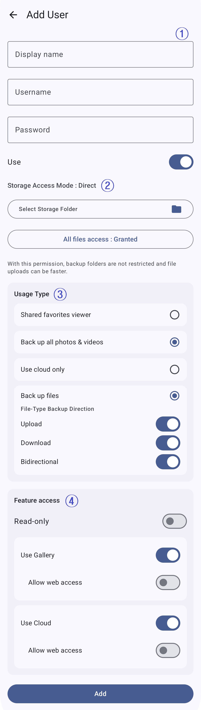

1
기본 사용자 정보
새 사용자의 계정 정보를 입력합니다. 표시 이름은 사용자 목록에 보이는 이름이고, 사용자 이름과 비밀번호는 클라이언트에서 로그인할 때 사용합니다.
- 표시 이름: 목록에서 계정을 구분하는 이름입니다.
- 사용자 이름: 클라이언트가 입력할 로그인 ID입니다.
- 비밀번호: 로그인 인증에 필요합니다.
- 사용: 계정을 즉시 활성화하거나 비활성화합니다.

새 사용자의 계정 정보를 입력합니다. 표시 이름은 사용자 목록에 보이는 이름이고, 사용자 이름과 비밀번호는 클라이언트에서 로그인할 때 사용합니다.
사용자 백업 파일을 저장할 위치와 접근 방식을 설정합니다.
계정의 백업 또는 공유 용도를 선택합니다.
계정을 만든 뒤 사용할 수 있는 기능을 정합니다. 백업 또는 공유 용도에 맞게 필요한 권한만 켜세요.
직접 접근 방식에서는 저장 폴더와 전체 파일 접근 권한을 함께 확인하세요. 파일 백업에서는 업로드·다운로드·양방향 옵션도 검토하세요. 가족이나 여러 사람이 사용한다면 계정별로 기능 권한과 읽기 전용 설정을 조정할 수 있습니다.
여러 사람이 사용할 때는 계정을 공유하기보다 사용자별로 별도 계정을 만드세요. 저장 위치와 기능 접근 권한을 개별적으로 관리하기 쉽습니다.